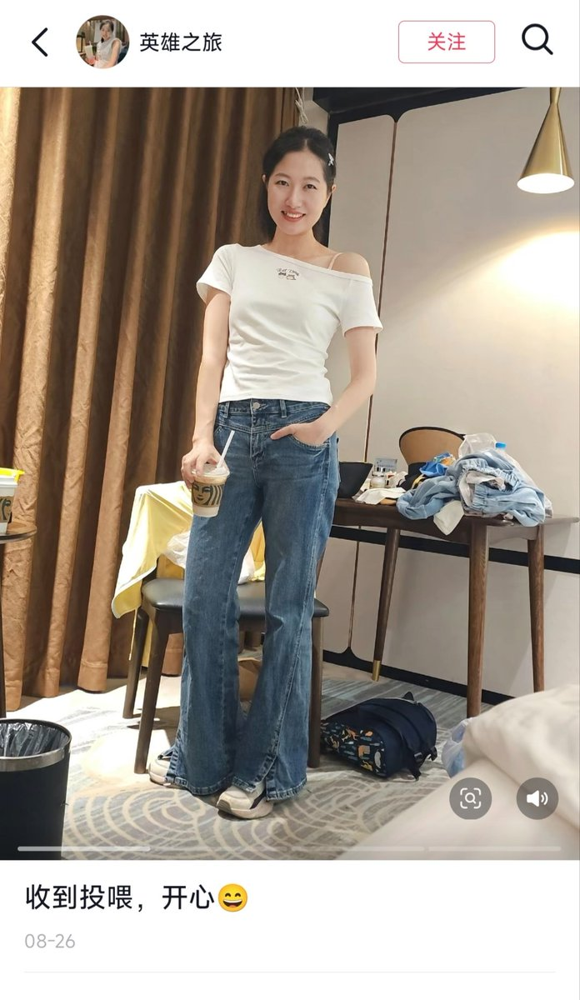
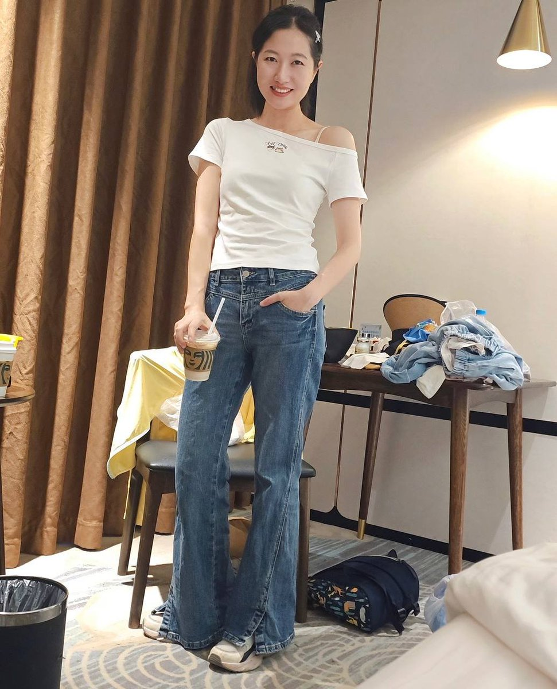

洛书瑶
@luoshuyao
@mahmoud69104228 唉，还是忍不住想发。
原图发布于抖音，8月26日。真不要脸，这跟造别人黄谣有什么区别。
1.56 复制打开抖音，看看【英雄之旅的图文作品】收到投喂，开心😄 yTy:/ 09/27 g@B.Gv :0pm


清欢老师
@mahmoud69104228
希望我学生家长永远不会翻墙，永远不会在深夜点开某软件......永远不会发现推上的我 https://t.co/NCUoXVqGBj